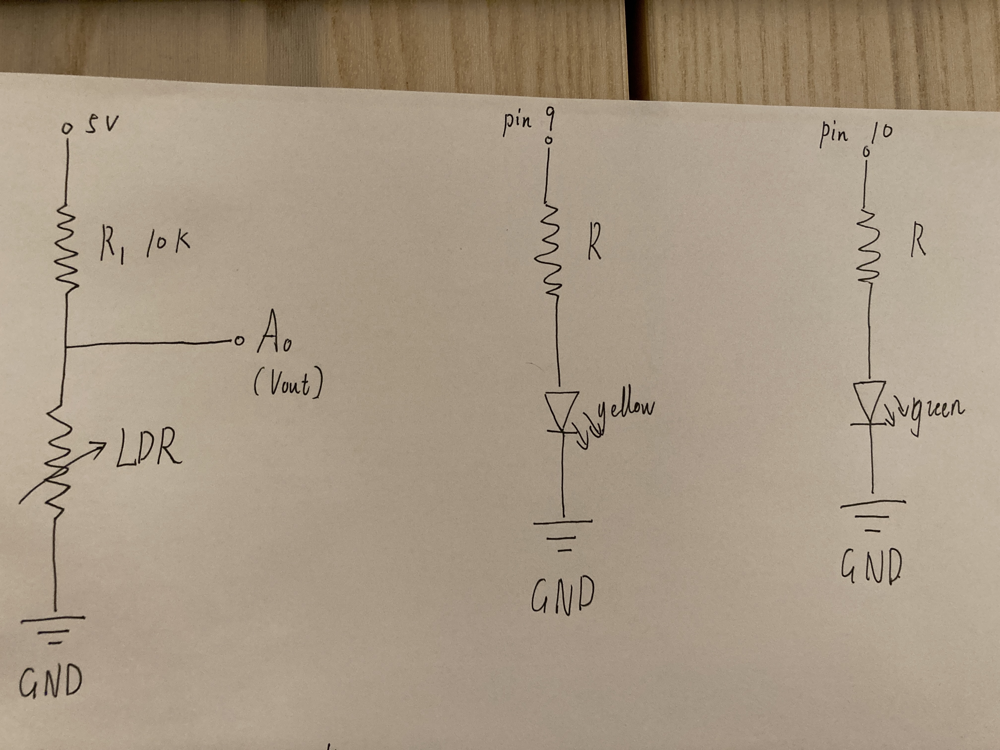
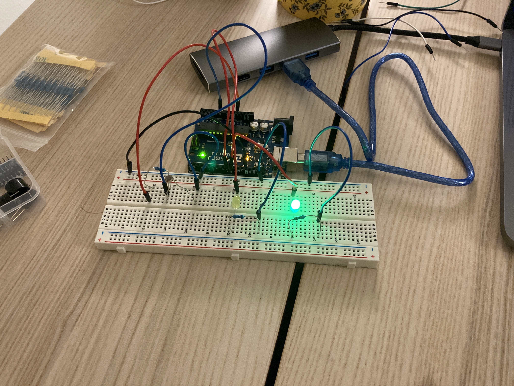
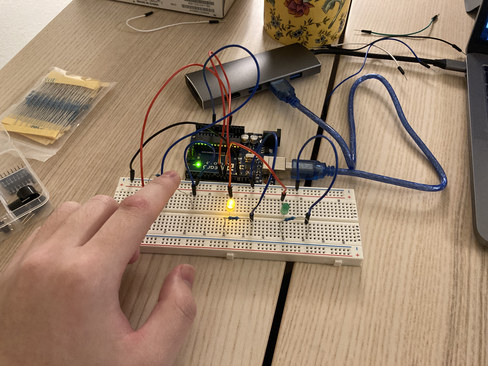

Assignment 3 - Input output

Process:
LDR range: 2KΩ - 100kΩ
And using the 10k resistor with LDR. Using the voltage divider to measure the voltage range of LDR:
Vout(Min) = 2k/(10k+2k) * 5V = 0.83V
When resistance of LDR is increasing, the voltage is increasing.
But maximum voltage is smaller than 5V. Therefore, it's working.
I decide to use the yellow, green resistors (with 1.8V drop).
5V - 1.8V = 20mA * R
3.2V = 0.02A * R
R = 160Ω
The minimum voltage requirement is 1.8V, 3.2V > 1.8V. So it's working.
We need to find 3 resistors that close to 160Ω
What if we choose 220Ω:
I = 3.2V/220Ω
I = 0.0145A
I = 14.5A
The maximum current requirement is 30mA, 14.5mA smaller than 30mA. So 220Ω's resistors are working well.
Therefore, I decide to use the 220Ω resistors



Code:
Set the pin 10, 9 as output and read the input on analog pin 0.
Print the results of sensorValue (which is LDR's sensorValue). If sensorValue is smaller than 600, change sensorValue to 0. if sensorValue is bigger than 700, change sensorValue to 1023.
The green LED will light up when the LDR is exposed to light.
If LDR detects envvironment become dark (like we use finger cover it), yellow LED will light up and green LED will fade.
Loop these steps
// the setup routine runs once when you press reset:
void setup() {
Serial.begin(9600); // initialize serial communication at 9600 bits per second:
pinMode(9, OUTPUT); // make pin 9 as an output
pinMode(10, OUTPUT);// make pin 10 as an output
}
// the loop routine runs over and over again forever:
void loop() {
// read the input on analog pin 0:
int sensorValue = analogRead(A0); // 0-1023
Serial.print("sensor = "); //print the results to the Serial sensor - start with "sensor = "
Serial.print(sensorValue); //print the results of sensorValue
if (sensorValue < 600) { //if sensorValue is smaller than 600
sensorValue = 0; // sensorValue will equal to 0
}
if (sensorValue > 700 ) { //if sensorValue is bigger than 700
sensorValue = 1023; //sensorValue will equal to 1023
}
int constrain_range = constrain(sensorValue, 0, 1023); // limits range of sensor values to between 0 and 1023
int outputValue = map(constrain_range, 0, 1023, 0, 100); //intended to change constrain_range from 0 to 1023 into another range 0 to 100 (I decide maximum is 100 because 255 is so bright)
analogWrite(9, outputValue); // set the brightness of pin 9 is outputValue
int constrain_range_green_led = constrain(sensorValue, 0, 1023); // limits range of sensor values to between 0 and 1023
int outputValue_green_led = map(constrain_range_green_led, 0, 1023, 100, 0); //intended to change constrain_range from 0 to 1023 into another range 100 to 0
analogWrite(10, outputValue_green_led); //set the brightness of pin 10 is outputValue_green_led
Serial.print("\t output = "); //print the results to the Serial Monitor - start with "output = "
Serial.println(outputValue); //print the results of outputValue
Serial.print("\t output2 = ");//print the results to the Serial Monitor - start with "output2 = "
Serial.println(outputValue_green_led); //print the results of outputValue_green_led
}